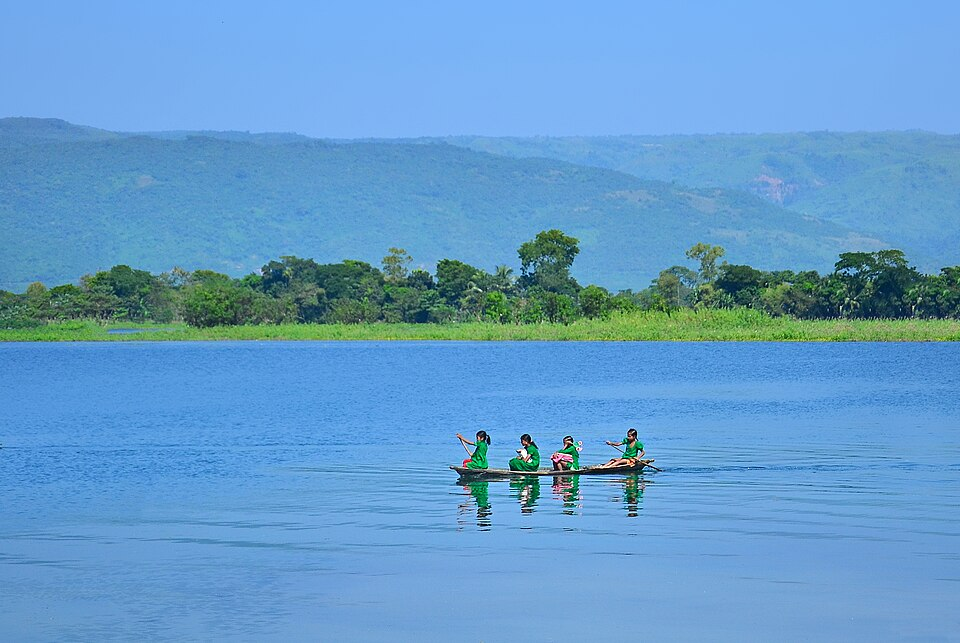

Region · Wetlands & open water
Mymensingh & Haor Wetlands
Bangladesh's great open water — a flooded plain in the north-east where migratory birds outnumber people in winter, houseboats drift across Tanguar Haor, and the Garo Hills press down to meet the water at Birishiri's white-clay cliffs.

The haors — vast bowl-shaped wetlands — are one of Bangladesh's best-kept travel secrets. In winter they fill with tens of thousands of migratory birds: waders, ducks, pelicans, and rare species that travel from Siberia and Central Asia. Tanguar Haor, a Ramsar site in Sunamganj, is the centrepiece — best explored by overnight houseboat. Nearby, the Someshwari River at Birishiri cuts through white-clay formations unlike anything else in the delta. Mymensingh city itself, a quietly elegant riverside town with a Zamindar palace and a colonial-era bridge, is the most convenient base for the whole area.
What to see
- Tanguar Haor. A 100 km² Ramsar wetland and the crown jewel of north-east Bangladesh. From October to February the haor fills with hundreds of thousands of migratory birds. Rent a wooden houseboat from Sunamganj town for an overnight that puts you on the water at dawn — the most rewarding travel experience in this part of the country.
- Birishiri & Someshwari River. The Someshwari flows down from the Garo Hills in Meghalaya, India, creating wide white sandbanks and pale clay formations at Birishiri in Netrokona district. The scene — turquoise water against chalk-white rock — feels unlike anywhere else in Bangladesh. Best visited November to January when the water is clear and the sandbanks are exposed.
- Mymensingh town & riverside. The old district capital sits on the Brahmaputra and still carries its colonial architecture — a Zamindar palace (now an agricultural university campus), a Victorian-era bridge, and an evening riverside promenade. A calm contrast to Dhaka, two to three hours north by train.
- Hakaluki Haor. South-east of Sylhet, Hakaluki is South Asia's largest freshwater wetland. Less visited than Tanguar Haor, it's quieter and easier to reach independently from Sylhet. Best for birdwatching November to January.
How long to plan
Two days gives you Mymensingh town and a half-day by boat on the Brahmaputra. Three to four days lets you travel north to Birishiri and then east to Sunamganj for an overnight on Tanguar Haor — the full haor circuit. If you're combining with Sylhet, add Hakaluki Haor as a detour en route.
Getting there
Mymensingh is 2–3 hours from Dhaka by train (Aggarwal Express, Brahmaputra Express) — one of the most scenic train rides in the country. Birishiri (Netrokona) is a further 2 hours by bus or CNG. Sunamganj for Tanguar Haor is 5–6 hours from Dhaka via Sylhet or Kishoreganj, then a boat from Sunamganj town covers the last stretch onto the haor. See how it all fits in the trip planner.
Timing is everything. The haors are at their best November to February, when the water is high, the birds are in, and the temperature is pleasant. By March, water levels drop and birds begin to leave. May to September the haors flood so completely that transport and access become difficult — this is not the season to visit.